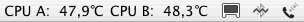

Programm nur in der Menüleiste verwenden |
Die Programme Hardwaremonitor und Temperaturmonitor stehen jeweils auch in entsprechenden "Light"-Versionen zur Verfügung. Mit den Light-Versionen können Sie Messwerte in der Menüleiste von Mac OS X anzeigen, ohne dass das Programm weitere Fenster anzeigt oder Platz im Dock verbraucht.

Sie sollten die Einstellungen für die Menüleiste in den "großen" Versionen der Programme vorgenommen haben, bevor Sie die jeweilige Light-Version starten. Das Light-Programm kann durch Auswahl des untersten Menüpunkts in dem eingeblendeten Menü beendet werden. Durch Auswahl des vorletzten Menüpunktes können Sie die "große" Version starten, z.B. um Einstellungen zu ändern.
Wenn Sie die Menüleistenanzeige in der "großen" Programmversion abschalten, wird die Light-Version nur als Symbol in der Menüleiste angezeigt, so dass so wenig Bildschirmfläche wie möglich verbraucht wird.